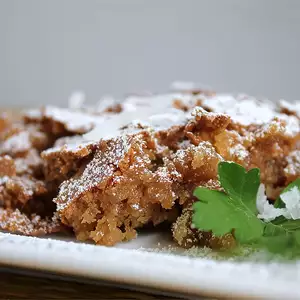

Sad Cake

A delicious dessert that hits just the spot
Perfect for when you want to eat a simple cake and not worry about presentations
Ingredients
- 2 cups biscuit baking mix
- 2 ¼ cups packed brown sugar
- 4 eggs
- ½ cup vegetable oil
- 1 cup flaked coconut
- 1 cup chopped pecans
- 1 teaspoon vanilla extract
Steps
- Preheat the oven to 350 degrees F (175 degrees C). Grease and flour one 9x13-inch pan.
- Mix thoroughly together biscuit mix, brown sugar, eggs, oil, flaked coconut, chopped pecans, and vanilla. Pour batter into the prepared pan.
- Bake in the preheated oven for 35 to 40 minutes. Allow cake to cool before cutting.